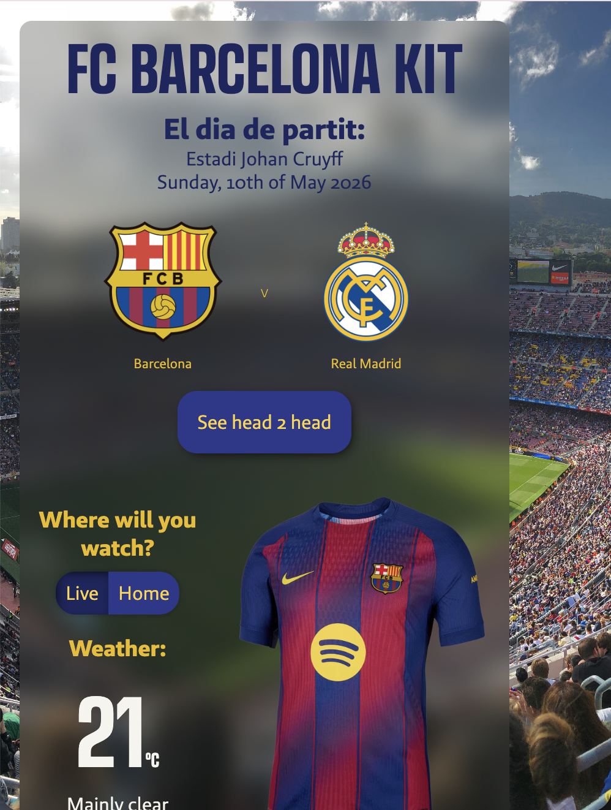

De opdracht


Bij de API opdracht moest ik een website maken met een content API en twee web API's, met een overzichtspagina en een detailpagina via templates met Render. Ik had gekozen voor twee content API's in plaats van één. Ik had gelukkig vrij snel een onderwerp gekozen: een FC Barcelona website waarbij je op basis van het weer een shirt kreeg dat je kon aantrekken. De geolocation API bepaalde of je thuis was of niet, en de weather API paste het shirt daarop aan. Het was uitzoekwerk maar ik vond het juist leuk om zo technisch te werk te gaan. Ik had nog nooit met Render en templates gewerkt en merkte al snel hoe fijn dat is als je een grotere website wilt bouwen, alles is gestructureerder en overzichtelijker dan alles los in één bestand gooien.

Wat zou ik anders doen
Als ik het opnieuw zou doen zou ik nog meer tijd nemen om de API's vooraf goed te begrijpen en goed te weten wat ik nou precies van de API verwacht voordat ik begin met bouwen, zodat ik minder tijd kwijt ben aan uitzoeken hoe de data eruitziet. En ik zou eerder nadenken over de structuur van de templates, zodat de overzichts- en detailpagina goed op elkaar aansluiten.